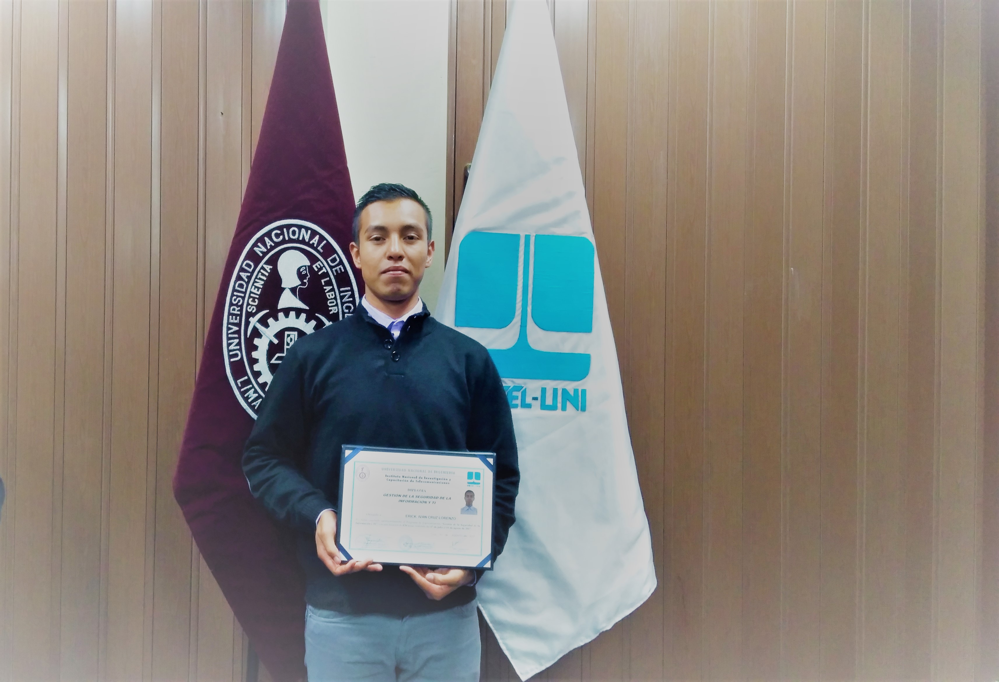

-
Fundador principal de "Aplicaciones LC" Desarrollador
11 actividades realiza Socio fundador principal de Aplicaciones LC. Ingeniero en Sistemas Computacionales, egresado del Tecnológico de Estudios Superiores de Coacalco, tiene más de 5 años de experiencia en el área de desarrollo web y escritorio. Participó en diversos proyectos para empresas de México y miembro de IEEE. Cuenta con certificaciones que lo respandan asi como Diplomados tomados en otros paises, el más importante Gestión de la seguridad informatica y TI, lo cual garantiza Software de alto nivel por la seguridad que implementa. Uno de sus objetivos es contribuir en el desarrollo tecnológico a nivel local, nacional e internacional. Su principal objetivo es crear nuevas tecnologias asi como darle seguimiento a nuevas actualizaciones para que el cliente tenga lo mejor
-
Fundador de "Aplicaciones LC" y Analista de Sistemas
10 actividades realizaIngeniero en Sistemas Computacionales, egresado del Tecnológico de Estudios Superiores de Coacalco, tiene más de 5 años de experiencia en el área de Analisis de Software a medida. Participó en diversos proyectos para empresas de México y miembro de IEEE junto con dos de los fundadores de APLICACIONES LC. su principal objetivo es que el uso de la tecnología se encuentra al alcance de todas las personas sin importar los recursos que tenga, su visión es ayudar y servir a cada uno de nuestros clientes. A lo largo del tiempo se ha dedicado a ofrecer servicios informáticos directamente con usuarios, ayudándoles a cumplir con sus objetivos.
-
Fundador de "Aplicaciones LC" y Tester
8 actividades realizaIngeniero en Sistemas Computacionales, egresado del Tecnológico de Estudios Superiores de Coacalco, tiene más de 5 años de experiencia en el área de Analisis de desarrollo de software a medida en diferentes lenguajes de programación. Participó en diversos proyectos para empresas de México y miembro de IEEE junto con dos de los fundadores de APLICACIONES LC. Lo cual lo garantiza como una persona destacada y profesional. Su principal objetivo es verificar y analizar la funcionalidad de las tecnologias que APLICACIONES LC desarrolla. Para el es muy importante que un producto de APLICACIONES LC esté enfocada a ser usada por personas sin experiencia en computación